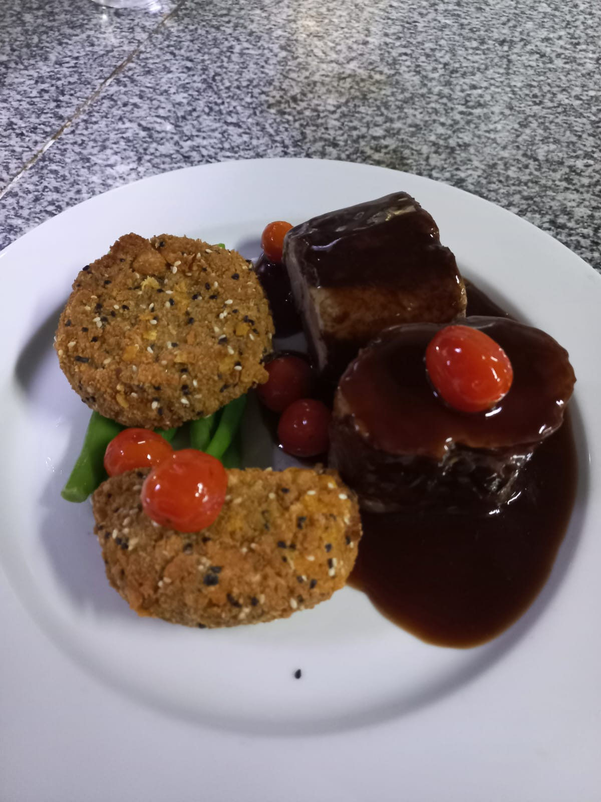
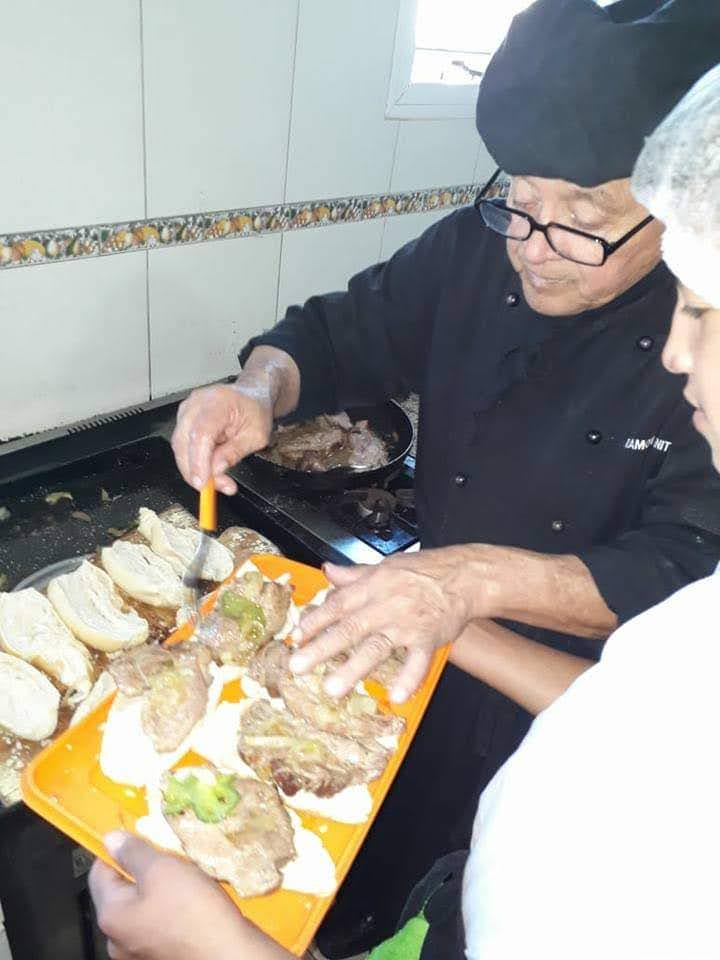

Chef Privado
Desde cenas íntimas hasta eventos exclusivos, crea momentos memorables a través de menús cuidadosamente diseñados y adaptados a tus preferencias culinarias, utilizando ingredientes frescos y de la más alta calidad. Ya sea que busques platos clásicos reinterpretados con un toque moderno o una experiencia culinaria totalmente nueva, está listo para cautivar tus sentidos y deleitar a tus invitados.
Con su pasión por la parrilla y una habilidad increíble, elige cuidadosamente los mejores cortes de carne y domina las técnicas de parrilla para brindar sabores deliciosos y platos que se ven tan bien como saben. Ya sea una reunión íntima o un gran evento, confía en este asador para darle un toque ahumado y sabroso a cualquier ocasión especial.

Catering
El servicio de catering para eventos ofrecido por el chef es una fusión única entre la pasión por la cocina y la creación de experiencias culinarias inolvidables. Con un enfoque meticuloso en la excelencia, se dedica a elevar cada ocasión a través de sabores exquisitos y presentaciones innovadoras.
Viandas
El servicio de viandas ofrecido por el Chef es la solución perfecta para empresas que buscan alimentar a su personal con comidas de calidad y equilibradas, así como para eventos que requieran una opción gastronómica conveniente y deliciosa.
